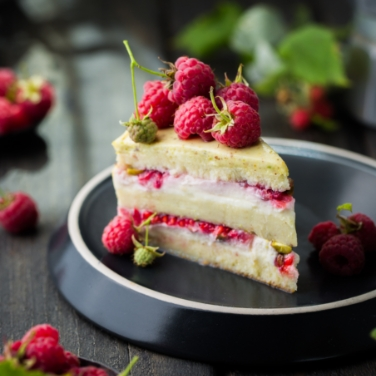
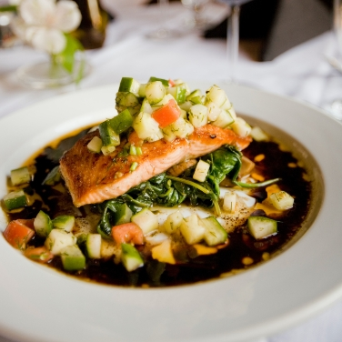
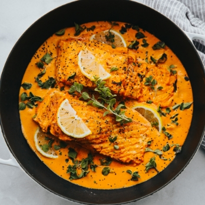
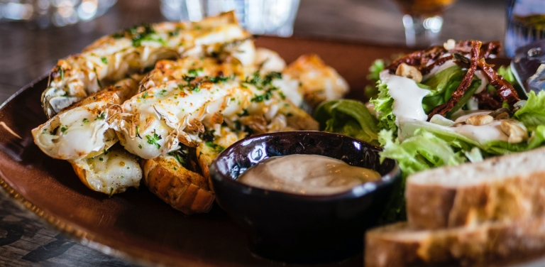

Restaurante
KOTTBULLAR
El Bibimbap que sirven en Biwon me regaló una cercana visión de la cultura Coreana.
Restaurante
LAS MARGARITAS
Escoges el número de albóndigas que demande tu corazón y tu apetito. Luego las metes
en un crocante pan de gruesa corteza y mullido corazón.
Restaurante
LA FAMA
Un viaje en el tiempo, a eso se refiere el restaurante LAS MARGARITAS. Con 113 años de
existencia ininterrumpida, se ha convertido en el espacio restaurador más antiguo de Colombia.

Restaurante
FRIDA
Sus creadores, 3 franceses que vinieron de paseo y se
enamoraron del país. El lugar es increíble, descomplicado, divertido. Sus paredes antiguas y ruinosas,
contrastan con la modernidad del resto de murales, luces de colores y elaboradas columnas de Guadua.